Spatial, statistical and geo-political analysis of the refugee crisis
What regions of the world experience the highest number of missing migrants/ fatalities?
How will this trend be shaped in the future?
How can we help?
Spatial analysis ↓ Statistical analysis ↓ Geo-political analysis ↓
Spatial impact and analysis of the refugee crisis
Ukraine refugees to the world between 2020-2022
The map attempts to demonstrate the effects of the Russia-Ukraine war in 2022 on immigration. For my map, I have looked at the increase in Ukrainian migration from 2020 to 2022 and to what extent are countries accommodating Asylum seekers and UNHC Refugees. The data for Ukrainian refugees for 2020-2022 was drawn from UNHCR’s data website and shapefiles and point data on countries were extracted from ArcGIS website. By using a bi-variate symbology of representation, I have attempted to overlap these two categories and highlighted the most migrated-to countries of the world. It is evident that migration increased significantly in 2022 when the war begun.
Refugee movement from the top five sending countries
According to a UNHCR report in 2022 , five countries (Afghanistan, Myanmar, South Sudan, Syria, and Venezuela) contribute to more than two thirds of global migration. The map chalks out the movement of Afghan, Burmese, South Sudanese, Syrian and Venezuelan refugees across the globe. Some countries are asylums for all these refugees whereas some of these serve only a few of these countries. The map marks out the most frequented countries of asylum. It is evident that many countries in Europe are home to all these migrants and serve as important asylums.
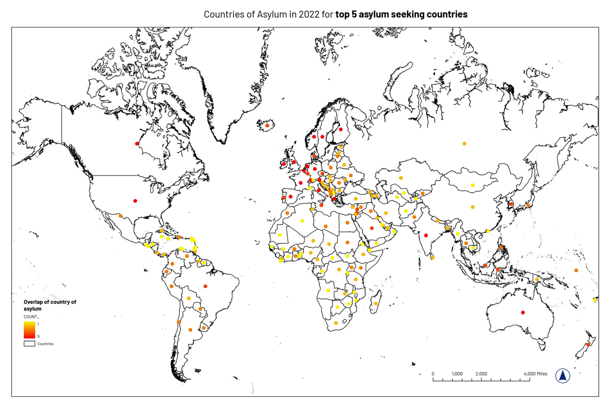
Proximity of migrant fatalities to entry & shipping ports
This dataset was pulled from the Missing Migrants Project by IOM. The map demonstrates the proximity of migrant fatalities to border crossing points and shipping ports. The map marks out the closest routes from the incident point to the entry point. The data is dated from January to November 2022. The data is extracted for the world but specifically, the map focuses on the Mediterranean Sea region which sees mass migration from countries like Syria, Libya, Jordan, etc. which have internal conflicts or civil wars going on. Although it is not clear where most of these migrants are traveling to, there is a massive number of fatalities closer to these entry/exit ports many of which are unofficial. The map also marks out the density of internally displaced persons in the various countries of the region.
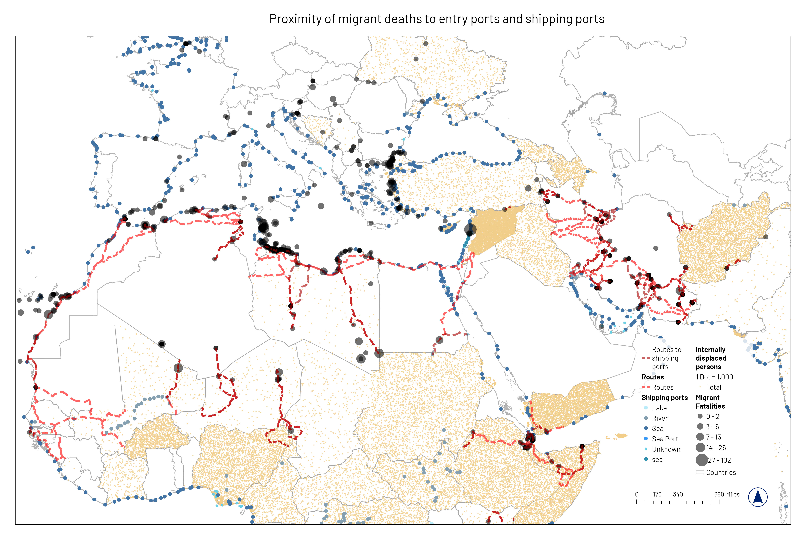
Proximity of drowning fatalities to port of entry
Through this mapping, I investigated the occurrence of migrant fatalities and their proximity to ports. The data for all ports was extracted from the UNHCR website. The map chalks the incidents of drowning of asylum seekers near different ports of entries across the world in 2022. The data represented contains all reported incidents from January until November.It is evident that there are more ‘not official’ ports than official ones and that most drowning have occurred near unofficial ports of entries. The map is an exploration of atrocities and uncertainties faced by migrants traveling outside their homeland in seek of asylum. There is also a very evident high number of drownings near the African and Middle Eastern coasts, indicating that migrants were probably traveling northward to Europe.The biggest drowning incident (close to a hundred people) occurred near Syria. Quite a lot of instances occurred within 500km (radius) of the ports of entries.
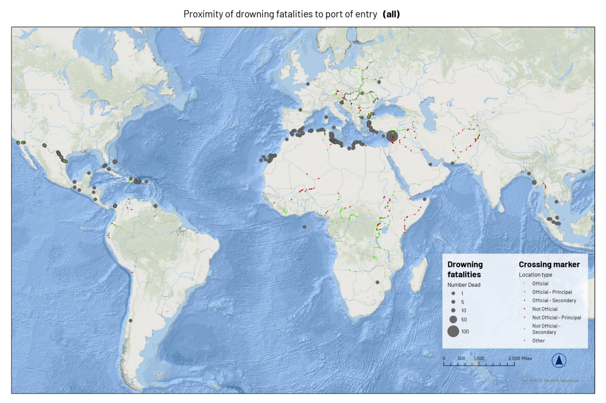
Internally Displaced Persons and acres of forests burned after forest fires (2020-2022)
The map focuses demonstrates the relation between occurrence of climate related disasters and internal displacement. Data on internal movement from the UNHCR is used along with forest fire data from Global Forest Watch. The UNHCR labelled such refugees who are affected by climate change as ‘climate refugees’. More and more refugees are expected to move internally because of unlivable conditions in increasing flood, heat and unhabitable zones across the planet. It is evident in the map that 2020 saw the greatest number of forest fires in Africa leading to further displacement of people.
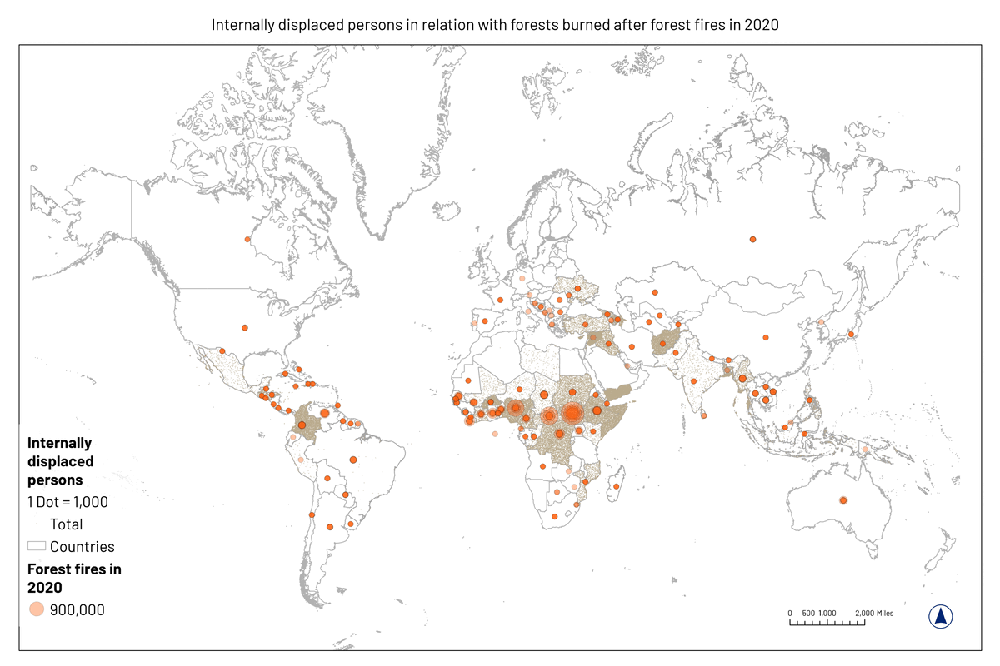
A study of the relationship between migrant fatalities and surrounding circumstances
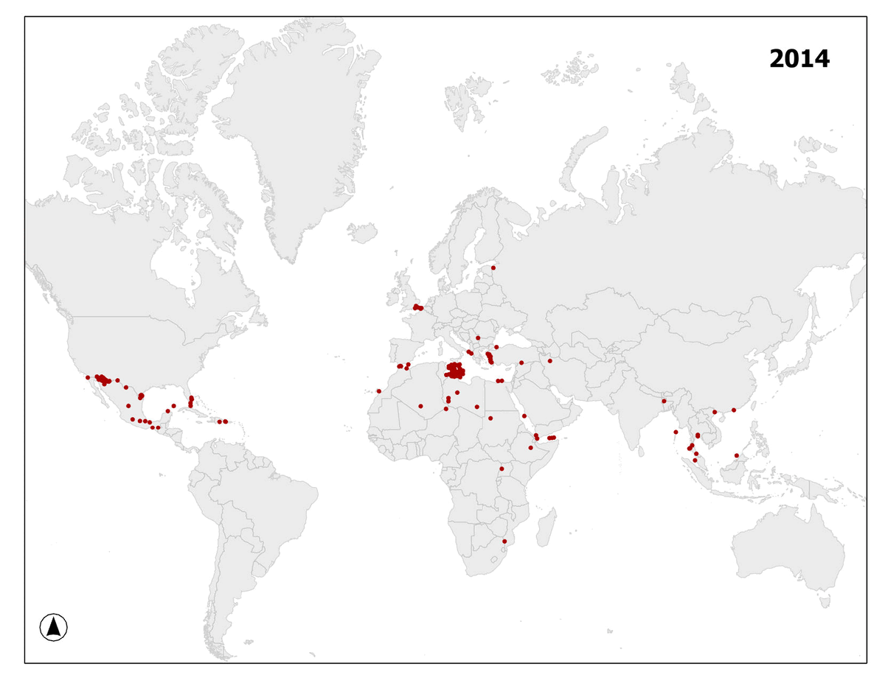
This project looks at the factors that influence migrant deaths or disappearances across the world and aims to better predict where interventions are needed. The project serves as a continuation in a series of explorations around migrant incidences.
Worldwide, there are 53,556 missing migrants since 2014 according to the Missing Migrants Project by International Organization for Migration (IOM). The Missing Migrants Project since 2014, records people who die in the process of migration towards an international destination, regardless of their legal status.
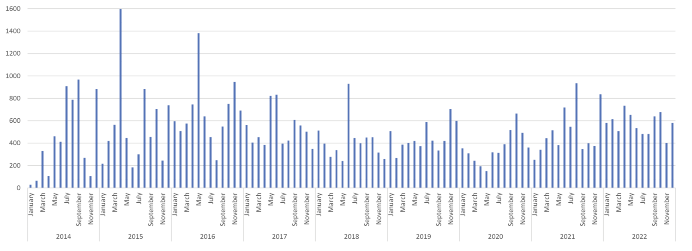
World Bank indicators
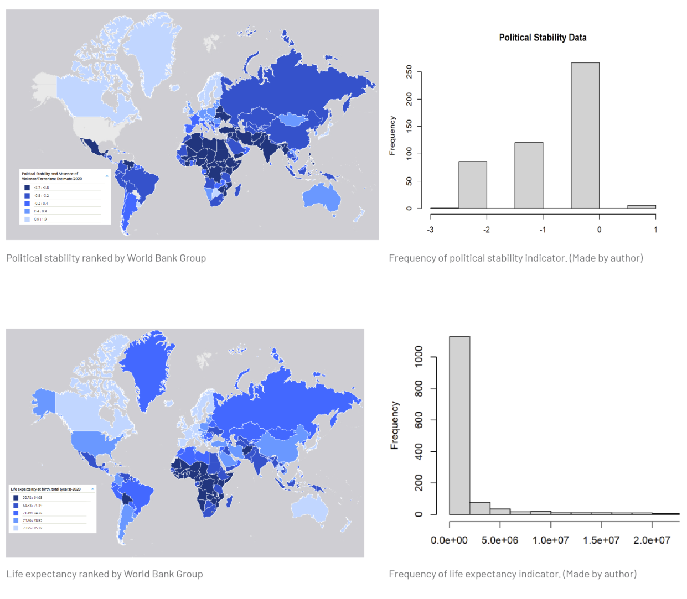
Political Stability Indicator
This data is produced by the World Bank Group and was obtained from the Databank. It measures political stability and absence of violence/terrorism in units of a standard normal distribution (approx from -2.5 to 2.5). This will help measure what circumstances are people leaving behind or escaping from in their home countries. Is there violence, instability or any other threat to democracy that people want to get away from and migrate? Most countries of our data set lie in the negative numbers. The mean of the indicators is -0.6 indicating some level of political instability and unrest in the country.
Life Expectancy Indicator
This data is produced by the World Bank Group and was obtained from the Databank. It measures the number of years population is expected to live. This will help measure what the country of origin’s life expectancy and living circumstances are and whether it influences a migrant’s decision.
Indicators
Frequency of region of incidence
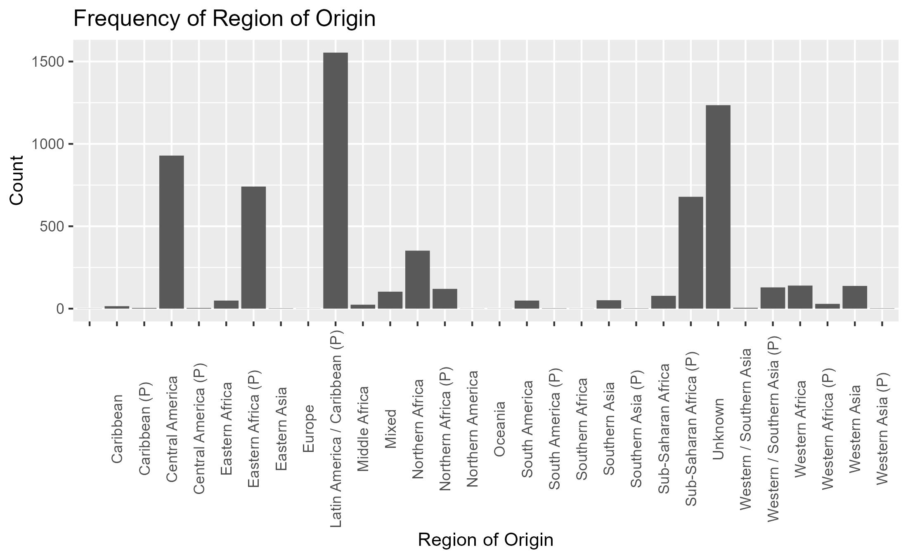 The regions with the maximum number of incidents are Mediterranean, North America and Northern Africa. For the purpose of this study, I will consider these three regions. The dataset also has no particular seasonal variation (all seasons are evenly distributed in terms of months).
Frequency of migration route taken
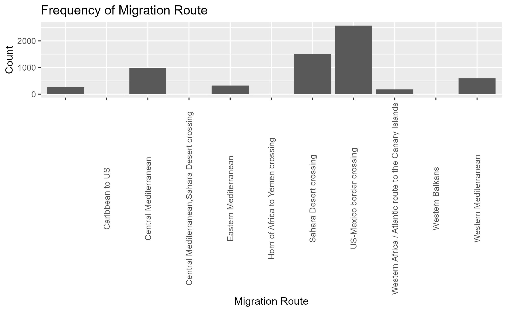 The most frequented migration routes are Central Mediterranean, Sahara Desert crossing and US-Mexico border crossing. This is very much aligned with the high number of incidents in the North American, Mediterranean and Northern African region.
Cause of fatalities
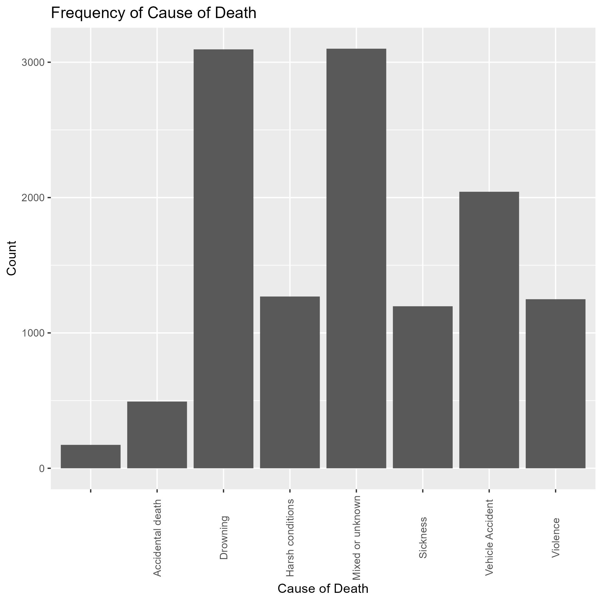 The leading cause of death here is drowning. So the project creates a new dummy variable with drowning as 1 and others as 0. A lot of incidents also have a mixed or unknown cause of death which might skew this analysis.
Regression Modeling
.png)
.png)
From the above, it is clear that our data is extremely over-dispersed and most values lie between 0-2. Even upon conducting a logarithm, most values lie between 0 and 1. One regression model that is often used for over-dispersed data: negative binomial should be useful here. The dependent variable is number of dead or missing migrants and the independent variables are Region of Incident, Year, Month, Drowning/ other (binary), World Bank Indicators, Region of origin, Migration route. The year was found to have a significant impact on the number of deaths and missing persons. As the year increased, the number of incidents decreased slightly. The month of the incident did not seem to have a noticeable effect on the outcome. The region where the incident occurred played a role. Incidents in North America were associated with a lower number of deaths and missing persons compared to incidents in other regions. However, this finding was not strongly statistically significant. Drowning as the cause of death was strongly related to a higher number of deaths and missing persons. Certain indicators, such as Life Expectancy, Birth rate, Internally displaced people, Democracy indicator also influenced the outcome.
The analysis also considered the interaction between the year and the region of the incident. The interaction terms showed that the relationship between the year and the number of deaths and missing persons varied depending on the region. However, these effects were not strong enough to reach statistical significance. The model provided a reasonably good fit to the data based on certain statistical measures.
The model has the best fit, with an AIC of 6525.8. All independent variables are significant: year, Northern Africa as a region of incidence, drowning as a cause of death, democratic indicator. The year in which incidents occurred had a significant impact on the number of deaths and missing persons. As the year increased, the number of incidents decreased slightly. The region of the incident also played a role. Incidents in North America were associated with a lower number of deaths and missing persons compared to incidents in other regions. This relationship was statistically significant. The cause of death, specifically drowning, had a significant effect on the number of deaths and missing persons. Incidents involving drowning were associated with a higher number of deaths and missing persons. Democracy indicator had a small but significant effect on the outcome. The study also looked at the interaction between the year and the region of the incident. They found that the relationship between these two factors and the number of deaths and missing persons varied depending on the region.
Results
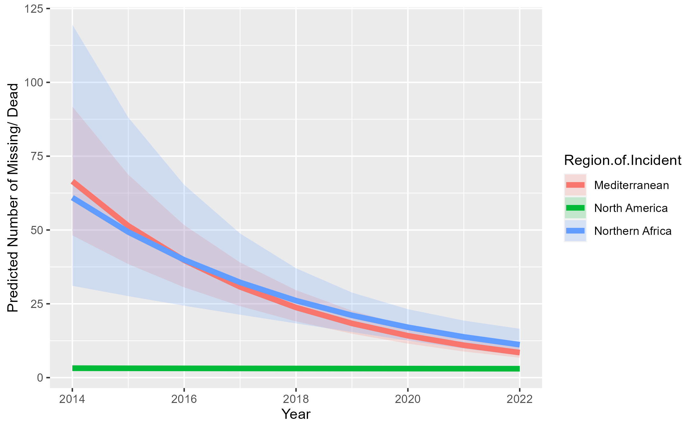 Although the incidents in Mediterranean and Northern Africa seem to be decreasing, they are rising in North America. There still needs to be policy recommendations to curb illegal smugglers and protection for all people no matter where they come from. Incident Rate Ratios (below) is a direct derivation of the negative bionomial model and is used to interpret the results.
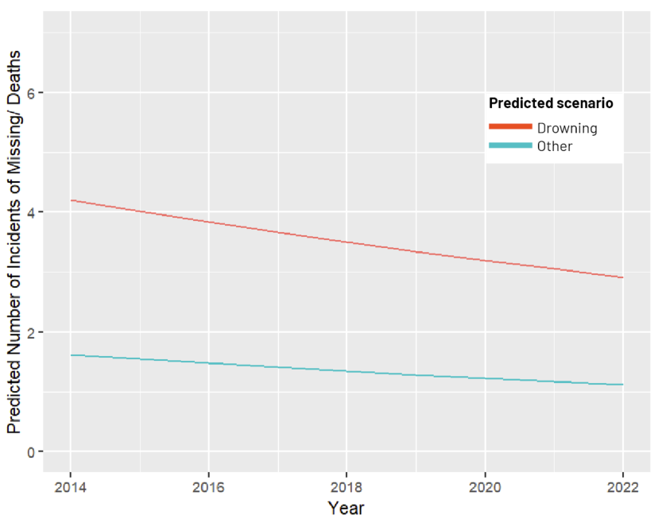
This graph shows that keeping all other variables constant, the number of cases of drowning are way more than other causes of death. This comes as no surprise as the more frequented route for refugee or asylum seekers is by water, especially in the Mediterranean region. Policy makers should be focusing now more than ever on this specific cause of fatalities and incidents to address the larger issue of migrant disappearances and fatalities.
While holding all other variables in the model constant,
If Democratic indicator is increased by one point, the rate of Total Number of Dead and Missing would be expected to increase by 1.09
While holding all other variables in the model constant,
Drowning, compared to all other causes of death, is expected to have a rate 2 times greater for Number of Dead/ Missing
If the year of analysis increased by one unit, the rate for Number of Dead/ Missing would be expected to decrease by a factor of 0.92 while holding all other variables in the model constant.
Effect of Turkey-Greece-Cyprus conflict on migration
How has the ongoing migrant crisis in the Mediterranean been affected by the geopolitical conflict between Turkey and Greece?
Scroll below for an interactive ArcGIS Storymap ↓
Motivation
This body of work holds a special place in my heart due to its urgency and significance in today’s world. As an Indian living in the US, my personal experiences have intersected with real individuals and their stories, giving a human face to the vast amount of data and analysis involved. During my travels, I had the privilege of meeting someone who had endured the hardships of seeking asylum and embarking on a journey from Syria to Germany in search of a new life. Hearing about her sacrifices, leaving behind not only her identity but also loved ones and friends, had a profound impact on me so much so that I made it my mission to unravel the causes and consequences of the crisis.
Hence, my journey at Penn has been dedicated towards exploring the pressing issue of the impending refugee crisis, delving into its spatial, statistical, and policy implications. Over the course of nearly a decade, I have been following the international news that has consistently highlighted the narrative of refugees fleeing from the Middle East and Africa, often resorting to unsafe means of migration, resulting in tragic incidents such as boat capsizing and loss of lives. The Missing Migrants Project, conducted by the International Organization for Migration has been the foundation of my work.
As a mapper, I am interested in looking at how these incidents are distributed across the globe. Through meticulous mapping techniques, I visualized the most common causes of death among these migrants and investigated whether proximity to country borders influenced the likelihood of drowning. Furthermore, I aimed to tackle questions such as the frequency of incidents in specific regions and the possibility of accurate statistical predictions. The analyst in me, inspired by a spatial stats class, sought to understand this challenge in the hope that policy and planning could help alleviate the fatalities and disappearances.
Soon enough, it became evident that three regions were bearing the brunt of this crisis: North America, Northern Africa, and the Mediterranean. Drowning emerged as the leading cause of fatalities, with the Mediterranean region experiencing a significant spike, since the onset of the Syrian War. I was curious to further explore the Mediterranean crisis during my Spring semester through a migration class, focusing on the growing tensions between Turkey and Greece—a conflict rooted in centuries of history. This hostility has compounded the refugee pressure on Greece, Cyprus, and Syria. As a policy analyst, I yearned to understand how various measures implemented by Turkey and the European Union could contribute to alleviating this crisis.
Through these three projects, I aspire to advance my work in the direction of a policy briefing next semester. My goal is to explore how city planners and analysts can play a pivotal role in addressing these challenges. By understanding the intricate dynamics of the refugee crisis and collaborating with policymakers, I aim to contribute to the development of effective strategies that can make a tangible difference in the lives of those affected. While I understand that no data or analysis can compare to the emotions and the suffering the migrants face, it is my hope that my work and vision will impact policy decisions and make refuge easier.